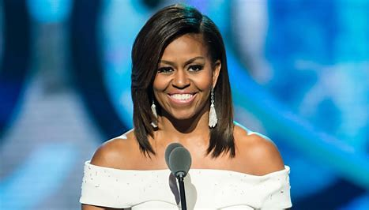
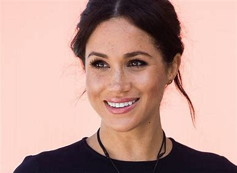

This is the History of Black Great Women

Meet the famous females who defied odds, broke boundaries and continue to pave the way for future generations.

Michelle Obama
In August of 2008, Michelle Obama delivered a speech at the Democratic Convention saying, "The only limit to the height of your achievements is the reach of your dreams and your willingness to work hard for them."
Shortly after, she would officially assume the role of first lady of the United States, making her the first African American woman to ever do so.
More than a decade later, Kamala Harris wrote her own chapter in the history books when she was inaugurated as the first Black — and female — vice president.
It's trailblazers like Obama and Harris, two awe-inspiring Black women in history, who prove that perseverance and determination can lead to profound change.

Meghan, Duchess of Sussex
Meghan Markle pursued a career as a screen actress, appearing in a number of TV series before landing the role of Rachel Zane on the USA Network show Suits.
Former actress Meghan Markle joined the royal family on 19 May 2018 when she married Prince Harry and became the Duchess of Sussex.
She is married to Prince Harry, Duke of Sussex, the younger son of King Charles III.